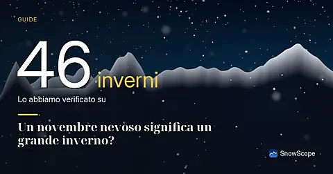
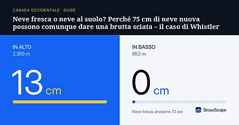

Bollettini neve · Inizio stagione
Bollettini neve quotidiani per sciatori: dove c'è neve, cosa arriva e dove sciare, dalla mappa neve di SnowScope e dalle stazioni di misura. Ogni numero viene dai dati del giorno.


Abbiamo confrontato la neve del 10 novembre con la neve più alta di ogni inverno in 46 stazioni sciistiche, su 46 inverni. Un inizio nevoso aiuta, ma meno di quanto pensino molti sciatori.

A dicembre la neve dipende prima di tutto dalla quota. 46 inverni passati in 676 stazioni delle Alpi mostrano quanta neve aspettarsi il 1°, il 15 e il 22 dicembre, da sotto i 1.200 m a oltre i 2.400 m.

Whistler Blackcomb ha ricevuto 75 cm di neve nuova in vetta in una settimana, poi una perturbazione mite con 124 mm d'acqua. Una guida semplice su fondo, neve fresca, pioggia e crosta.